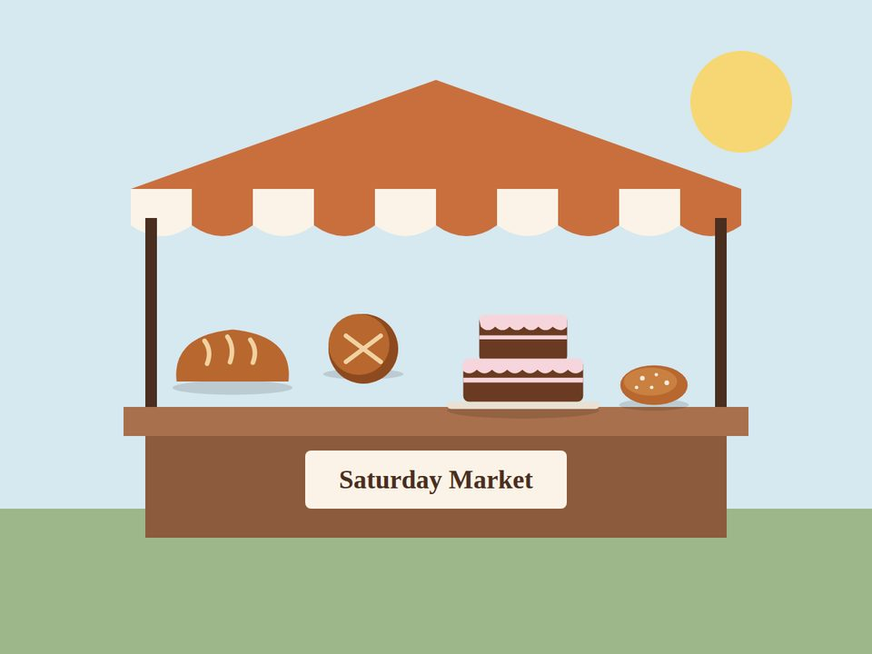

Main bakery
42 Victoria Road, Grassy Park, Cape Town, 7941Mon–Fri 06:30–18:00 · Sat 07:00–14:00 · Sun 07:00–12:00
The interactive map needs JavaScript. Open the map on OpenStreetMap.
Mon–Fri 06:30–18:00 · Sat 07:00–14:00 · Sun 07:00–12:00
The interactive map needs JavaScript. Open the map on OpenStreetMap.
Saturdays only, 08:00–13:00 (weather permitting)
The interactive map needs JavaScript. Open the map on OpenStreetMap.
Everyday bread, slices and treats are in store from opening time. Whole cakes need one day’s notice, custom cakes five days, and wedding cakes three weeks.
We are halaal-friendly: no pork or alcohol is used in any product. We are not formally certified yet.
Yes. Delivery in Grassy Park, Lotus River, Wetton, Ottery and Parkwood costs R60. Choose delivery on the Order & Enquire form.
Tell us about allergies when you order. Our kitchen handles wheat, nuts, milk and eggs, so we cannot promise any item is completely free of them.
A 50% deposit by EFT or in store confirms your order. The balance is paid on collection or delivery.
At the community market on Klip Road, Grassy Park, every Saturday from 08:00 to 13:00, weather permitting. Both locations are on the maps above.
